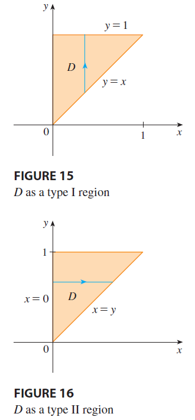

EXAMPLE 5 Evaluate the iterated integral \(\int_0^1 \int_x^1 \sin(y^2) dy dx\).

SOLUTION If we try to evaluate the integral as it stands, we are faced with the task of first evaluating \(\int \sin(y^2) dy\). But it’s impossible to do so in finite terms since \(\int \sin(y^2) dy\) is not an elementary function. So we must change the order of integration. This is accomplished by first expressing the given iterated integral as a double integral. Using (3) backward, we have \[ \int_0^1 \int_x^1 \sin(y^2) dy dx = \iint_D \sin(y^2) dA \] where \[ D = \{(x, y) | 0 \le x \le 1, x \le y \le 1\} \] We sketch this region \(D\) in Figure 15. Then from Figure 16 we see that an alternative description of \(D\) is \[ D = \{(x, y) | 0 \le y \le 1, 0 \le x \le y\} \] This enables us to use (5) to express the double integral as an iterated integral in the reverse order: \[ \int_0^1 \int_x^1 \sin(y^2) dy dx = \iint_D \sin(y^2) dA = \int_0^1 \int_0^y \sin(y^2) dx dy \] \[ = \int_0^1 [x \sin(y^2)]_{x=0}^{x=y} dy = \int_0^1 y \sin(y^2) dy = \left[ -\frac{1}{2}\cos(y^2) \right]_0^1 = \frac{1}{2}(1 - \cos 1) \]